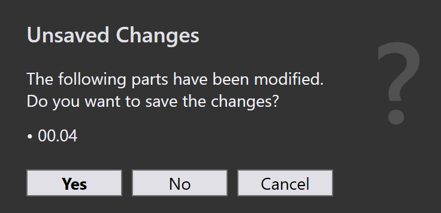
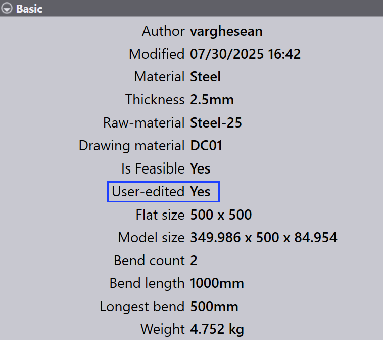

Gereedschapsvalidatie
Dit gedeelte beschrijft hoe u de gereedschapsinformatie voor onderdelen in TruSmartCAM kunt openen en wijzigen.
-
Klik met de rechtermuisknop op een onderdeeltegel om het onderdeelpaneel te openen en gereedschapsopties te openen.

-
Klik op Uitrustingen om over te schakelen naar de eerste beschikbare voorziene instantie van gereedschap.
-
Als alternatief klikt u rechtstreeks op een voorziene instantie van gereedschap om machinedetails en gereedschapsopties te bekijken.
-
Gebruik
 om
Openen in de modus alleen lezen voor weergave.
om
Openen in de modus alleen lezen voor weergave. -
Gebruik
 om
Het document uitchecken voor bewerking.
om
Het document uitchecken voor bewerking. -
De geselecteerde voorziene instantie van gereedschap opent in TecZone of MetaCAM.
-
Voer handmatige gereedschapscontroles uit en breng de nodige wijzigingen aan.
-
Wanneer u probeert op te slaan, verschijnt een dialoogvenster Unsaved Changes waarin u wordt gevraagd uw bewerkingen te bevestigen.

-
Klik op Yes om door te gaan met opslaan.
-
Het systeem voert Gereedschapsvalidatie opnieuw uit na het opslaan.
-
Als er geen fouten zijn, verschijnt de optie om wijzigingen op te slaan naar TruSmartCAM.

-
Als gereedschapsfouten worden gevonden, wordt een foutmelding weergegeven:

-
Na het opslaan wordt de gereedschapsstatus van de onderdelen bijgewerkt in de onderdelenbibliotheek.
-
Een groene kleur op de voorziene instantie van gereedschap geeft aan dat deze is ingecheckt.

-
De Gereedschapsinstantie Auteur wordt bijgewerkt naar de laatste persoon die deze heeft bewerkt.
-
Het veld Door gebruiker bewerkt geeft aan of de voorziene instantie handmatig is gewijzigd. Wanneer een gebruiker de instantie uitcheckt en wijzigingen aanbrengt, wordt dit veld automatisch ingesteld op Ja bij het opslaan.

-
Als een onderdeel momenteel wordt bewerkt, verschijnt er een gebruikerspictogram op de tegel.

-
Bij het zweven over de tegel wordt weergegeven wie deze heeft uitgecheckt en het tijdstip waarop deze is uitgecheckt.
-
Terwijl het onderdeel is uitgecheckt, is de optie
Het document uitchecken voor bewerking uitgeschakeld
voor dezelfde voorziene instantie van gereedschap, en wordt de optie  Uitchecken annuleren ingeschakeld.
Uitchecken annuleren ingeschakeld.